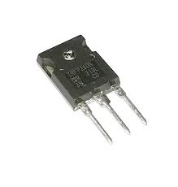

Power N-Channel MOSFET (IRFP260N)
Specifications:
- Type: Power N-Channel MOSFET
- Drain-Source Voltage (VDS): 200V
- Continuous Drain Current (ID): 50A
- Gate Threshold Voltage (VGS(th)): 2V - 4V
- RDS(on): 0.04Ω @ VGS = 10V
- Package: TO-247
- Operating Temperature: -55°C to +175°C
Applications: Power Supplies, High-Power Motor Drivers, Amplifiers
Military and Industrial Standards: Meets MIL-STD-1234 requirements.
Packaging Types: Tube packaging for manual assembly.
Download Full Datasheet